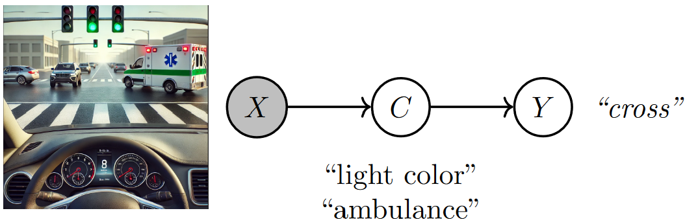

3. Quantitative metrics in concept interpretability#
In the “The tale of the deep learning model that failed my driving exam”, we compared the decisions of an 18-year-old driver and a deep learning (DL) model when facing a tricky intersection where the driver had a green light, but an ambulance unexpectedly crossed. While both drivers stopped at the intersection, when the driver evaluator asked the model to explain how it came to such a decision, he realized the model’s responses were purely technical, focused on pixel values and activations rather than a true understanding of traffic rules or emergency vehicles:
“If pixel 2,890 had an RGB value of (28, 178, 111), the model would have chosen to cross.” [Example of a DL driver explanation]
To help the driving evaluator, in the last chapter, we introduced Concept Bottleneck Models (CBMs):
{kind=link}

Fig. 3.1 A concept bottleneck model maps raw image features (pixels) to human-understandable concepts (e.g., ambulance crossing) and then relies on these predicted concepts to make decisions (e.g., whether to cross). Image created by the author with assistance from GPT4-o.#
CBMs allow the evaluator to gain insights into a DL model’s decision-making process as:
Task predictions can be traced back to the activation of human-interpretable concepts. This enables the model to answer the driving evaluator’s question by saying, “I decided to cross as I saw a green light and there was no ambulance”.
Altering concept values changes the model’s decisions. This allows the model to respond to the evaluator’s question with, “In the same scenario, if there is an ambulance, I would cross”.
While these qualitative answers reassured the evaluator, he now needs a quantitative way to assess how well the model responds in different situations. To show this, we use three key metrics in concept-based interpretability: concept/task predictive performance, intervention effectiveness, and concept completeness.
In the following, we assume we have a CBM \((\theta_g, \theta_f)\) and a dataset of i.i.d. triples (input, concepts, task) \(\mathcal{D} = \{(\mathbf{x}, \mathbf{c}, y)\}\), which we use to compute these metrics.
3.1. Predictive performance#
3.1.1. Task performance#
In the driving test, task performance [KNT+20] measures how well the model predicts whether to cross or stop at the intersection, based on concepts like traffic light color and the ambulance. A high task performance indicates that the model generally makes the correct decision. Task performance is usually represented as the likelihood:
Notice that in common classification settings, this likelihood becomes the empirical test task accuracy of the model.
Limitations: High task performance alone doesn’t guarantee interpretability. The model might achieve high performance by relying on uninterpretable or poorly defined concepts, potentially missing key information. For example, a CBM could correctly predict whether to cross or stop, but its decisions might be unaffected by changing the value of the concept “ambulance”.
3.1.2. Concept performance#
Concept performance [KNT+20] measures how well the model correctly predicts the concepts from the input data. In our driving example, this evaluates how well the model detects traffic light color or the ambulance’s presence. Similarly to task performance, concept performance can be measured as the likelihood:
In practice, this likelihood may be replaced with proxy metrics such as mean Area Under the Receiving Operating Characteristic curve (AUC-ROC) across all concepts. This is particularly useful in situations where concepts are highly imbalanced, and therefore a majority classifier may achieve high likelihood without really learning anything.
Limitations: While high concept performance means the model can correctly identify the traffic light color and ambulance presence, it doesn’t always imply that the model will make the right final decision. For example, even if the model accurately identifies a green light and no ambulance, it might still incorrectly predict that the car should stop.
3.2. Intervention effectiveness#
In the coding practice of the previous chapter, we observed how changing the predicted value of a concept affects task predictions. This property allows human experts to intervene on mispredicted concept values and correct them to improve the model’s task performance. Intervention effectiveness [KNT+20] measures how well a CBM improves task performance after such corrections. This can be achieved by computing the area under the intervention curve as follows:
consider a subset of the powerset of the concept indices \(\mathcal{I} \subseteq \mathcal{P}(\{1, \dots, |\mathcal{C}|\})\) to intervene on;
for each concept group \(\mathcal{I}' \in \mathcal{I}\), replace the subset of predictions \(g(\mathbf{x})_{\mathcal{I}'}\) with ground truth values \(\mathbf{c}_{\mathcal{I}'}\);
In the driving test scenario, imagine the model incorrectly predicts that the ambulance is absent, leading to a wrong decision to cross. This metric would evaluate whether correcting the concept by setting “ambulance = 1” leads the model to change its prediction to the correct one (i.e., stopping). After this human intervention, we expect the model to revise its decision and recommend stopping the car.
Intervention effectiveness is particularly useful when human experts need to intervene and adjust concept values to improve the model’s decisions, ensuring the model responds accurately after corrections.
Limitations: This metric is highly dependent on the quality of the interventions provided by humans. Poorly chosen interventions can reduce the model’s performance, even if the concepts themselves are correct. Moreover, if the concept predictive accuracy is already very high, then this metric may not give you any new insights as interventions would have very little effect on the actual bottleneck.
3.3. Concept completeness#
In the driving test example, the driving evaluator may wonder whether a CBM underperforms compared to a standard black-box model that does not use concepts. This question can be answered using concept completeness [YKA+20], a metric that helps determining if the concepts alone provide sufficient information for the model to solve the task when compared to a black box.
Concept completeness1 is defined as the ratio of the task performance of a CBM to that of a black-box model \((\theta_b)\):
In the driving test scenario, if the CBM uses concepts like “traffic light color” and “ambulance presence” and achieves a task accuracy that is close to or greater than a black-box model trained directly on raw input (e.g., image pixels), it implies that the concepts provide the necessary information to complete the task. For instance, if the CBM’s accuracy in predicting whether to stop or cross is 95% and the black-box model’s accuracy is 96%, the high concept completeness score shows that interpretability is achieved with minimal loss in task accuracy.
Limitations: High concept completeness does not guarantee that the concepts themselves are fully interpretable or well-defined; a model might achieve high completeness while relying on concepts that are difficult for humans to understand.
3.4. Coding practice: quantitative metrics for concept-based models#
In this practice, we will evaluate a CBM’s predictive performance, intervention effectiveness, and concept completeness in a simple traffic light scenario where decisions to cross or stop depend on two concepts: the traffic light being green and the presence of an ambulance. The model predicts these concepts and uses them to make decisions.
⚠️ Note: This section assumes familiarity with the first chapter on CBMs and PyC (PyC must be installed before running this code). If you’re new to these concepts, it’s recommended to start with this introductory chapter for foundational understanding.
3.4.1. Step #1: Train a CBM#
We begin this practice by re-training the Concept Bottleneck Model (CBM) used in the previous coding exercise.
import numpy as np
import torch
from torch_concepts.nn import LinearConceptLayer
from torch_concepts.data import TrafficLights
# Fix seeds first
seed = 42
torch.manual_seed(seed)
np.random.seed(seed)
n_samples = 500
# Loading training dataset
dataset = TrafficLights(
n_samples=n_samples,
possible_starting_directions=['west'],
resize_final_image=0.05,
selected_concepts=[
'green light on selected lane',
'car in intersection',
'ambulance seen',
'ambulance approaching perpendicular to selected car',
],
split='train',
)
concept_names, task_names = dataset.concept_names, dataset.task_names
n_concepts = len(concept_names)
# Loading testing dataset
# Generate the test dataset
test_dataset = TrafficLights(
n_samples=n_samples,
possible_starting_directions=['west'],
resize_final_image=0.05,
selected_concepts=[
'green light on selected lane',
'car in intersection',
'ambulance seen',
'ambulance approaching perpendicular to selected car',
],
split='test',
)
print(
f"Training set has {len(dataset)} samples while test set "
f"has {len(test_dataset)} samples"
)
Training set has 300 samples while test set has 100 samples
# Define the CBM
latent_dims = 32
# The encoder extracts a low-dimensional representation of the input
encoder = torch.nn.Sequential(
# A 3x3 convolution with 4 output channels
torch.nn.Conv2d(3, 4, (3, 3), padding='same'),
torch.nn.LeakyReLU(),
# A 3x3 convolution with 4 output channels with a batch norm
torch.nn.Conv2d(4, 4, (3, 3), padding='same'),
torch.nn.LeakyReLU(),
torch.nn.BatchNorm2d(4),
# A 3x3 convolution with 4 output channels
torch.nn.Conv2d(4, 4, (3, 3), padding='same'),
torch.nn.LeakyReLU(),
# A 3x3 convolution with 4 output channels with a batch norm
torch.nn.Conv2d(4, 4, (3, 3), padding='same'),
torch.nn.LeakyReLU(),
torch.nn.BatchNorm2d(4),
# A 5x5 max pooling layer
torch.nn.MaxPool2d((5, 5)),
# Finally, we flatten and map it to a known latent space size
torch.nn.Flatten(start_dim=1, end_dim=-1),
torch.nn.Linear(576, latent_dims), # 576 comes from the size after flattening
torch.nn.LeakyReLU(),
)
# The concept scorer predicts concept logits {traffic light color, ambulance presence}
c_layer = LinearConceptLayer(
in_features=latent_dims,
out_annotations=concept_names,
)
# The task predictor determines the value of the downstream label {cross}
y_predictor = torch.nn.Sequential(
torch.nn.Linear(n_concepts, latent_dims),
torch.nn.LeakyReLU(),
torch.nn.Linear(latent_dims, 1), # output shape 1 as it is a binary task
)
model = torch.nn.Sequential(encoder, c_layer, y_predictor)
# Print it out
model
Sequential(
(0): Sequential(
(0): Conv2d(3, 4, kernel_size=(3, 3), stride=(1, 1), padding=same)
(1): LeakyReLU(negative_slope=0.01)
(2): Conv2d(4, 4, kernel_size=(3, 3), stride=(1, 1), padding=same)
(3): LeakyReLU(negative_slope=0.01)
(4): BatchNorm2d(4, eps=1e-05, momentum=0.1, affine=True, track_running_stats=True)
(5): Conv2d(4, 4, kernel_size=(3, 3), stride=(1, 1), padding=same)
(6): LeakyReLU(negative_slope=0.01)
(7): Conv2d(4, 4, kernel_size=(3, 3), stride=(1, 1), padding=same)
(8): LeakyReLU(negative_slope=0.01)
(9): BatchNorm2d(4, eps=1e-05, momentum=0.1, affine=True, track_running_stats=True)
(10): MaxPool2d(kernel_size=(5, 5), stride=(5, 5), padding=0, dilation=1, ceil_mode=False)
(11): Flatten(start_dim=1, end_dim=-1)
(12): Linear(in_features=576, out_features=32, bias=True)
(13): LeakyReLU(negative_slope=0.01)
)
(1): LinearConceptLayer(
(transform): Sequential(
(0): Linear(in_features=32, out_features=4, bias=True)
(1): Unflatten(dim=-1, unflattened_size=[4])
(2): Annotate()
)
)
(2): Sequential(
(0): Linear(in_features=4, out_features=32, bias=True)
(1): LeakyReLU(negative_slope=0.01)
(2): Linear(in_features=32, out_features=1, bias=True)
)
)
We train the model:
from torch.utils.data import DataLoader
n_epochs = 20
concept_loss_weight = 10
lr = 0.01
batch_size = 50
# Define optimizer and loss function
model = torch.nn.Sequential(encoder, c_layer, y_predictor)
optimizer = torch.optim.AdamW(model.parameters(), lr=lr)
loss_fn = torch.nn.BCELoss()
# Make a batch dataset loader
dataloader = DataLoader(
dataset,
batch_size=batch_size,
shuffle=True,
drop_last=False,
num_workers=2,
)
# Standard PyTorch learning cycle
model.train()
for epoch in range(n_epochs):
for batch_idx, (x, y, c, _, _) in enumerate(dataloader):
# Encode input, then predict concept and downstream tasks activations
emb = encoder(x)
c_pred = c_layer(emb).sigmoid()
y_pred = y_predictor(c_pred).sigmoid().view(-1)
# Double loss on concepts and tasks
loss = loss_fn(y_pred, y) + concept_loss_weight * loss_fn(c_pred, c)
# Perform the update
optimizer.zero_grad()
loss.backward()
optimizer.step()
task_acc = torch.mean(((y_pred > 0.5) == y).type(torch.float))
task_acc = task_acc.detach().cpu().numpy()
if ((epoch + 1) % 5 == 0) and (batch_idx == 0):
print(
f"Epoch [{epoch+1}/{n_epochs}], "
f"Step [{batch_idx+1}/{len(dataloader)}], "
f"Loss: {loss.item():.4f}, "
f"Task Accuracy: {task_acc * 100:.2f}%, "
)
Epoch [5/20], Step [1/6], Loss: 3.0958, Task Accuracy: 96.00%,
Epoch [10/20], Step [1/6], Loss: 1.9020, Task Accuracy: 90.00%,
Epoch [15/20], Step [1/6], Loss: 1.8252, Task Accuracy: 90.00%,
Epoch [20/20], Step [1/6], Loss: 0.8952, Task Accuracy: 94.00%,
We then evaluate this trained model on the test dataset. For this, we first load the test set into memory (important note: we would only recommend this for very small datasets like the toy example here. With large dataset, you should use batched data loaders instead):
# Load the train set to memory
x_train = []
c_train = []
y_train = []
for (x, y, c, _, _) in dataset:
x_train.append(x.unsqueeze(0))
y_train.append(y.unsqueeze(0))
c_train.append(c.unsqueeze(0))
x_train = torch.concat(x_train, dim=0)
y_train = torch.concat(y_train, dim=0)
c_train = torch.concat(c_train, dim=0)
# Load the test set to memory
x_test = []
c_test = []
y_test = []
for (x, y, c, _, _) in test_dataset:
x_test.append(x.unsqueeze(0))
y_test.append(y.unsqueeze(0))
c_test.append(c.unsqueeze(0))
x_test = torch.concat(x_test, dim=0)
y_test = torch.concat(y_test, dim=0)
c_test = torch.concat(c_test, dim=0)
And we can now evaluate the test concept and label predictions:
model.eval()
c_pred = c_layer(encoder(x_test)).sigmoid()
y_pred = y_predictor(c_pred).sigmoid()
print("Average task prediction:", y_pred.mean(0).detach().cpu().numpy())
print("Average concept prediction:", c_pred.mean(0).detach().cpu().numpy())
Average task prediction: [0.48655814]
Average concept prediction: [0.59093165 0.41849053 0.17442954 0.1007252 ]
3.4.2. Step #2: Compute task and concept performance#
In our traffic light dataset, both concepts (“traffic light color” and “ambulance presence”) and the output (“cross”) are binary variables. This allows us to evaluate task and concept performance using the Area Under the Receiver Operating Characteristic Curve (ROC AUC) from prediction scores, a standard metric for binary classification problems.
from sklearn.metrics import roc_auc_score
concept_performance = roc_auc_score(c_test, c_pred.detach())
task_performance = roc_auc_score(y_test, y_pred.detach())
print(f'Task performance: {task_performance*100:.2f}%')
print(f'Concept performance: {concept_performance*100:.2f}%')
Task performance: 94.67%
Concept performance: 92.39%
After a few epochs, the CBM is already able to accurately predict both concepts and tasks.
3.4.3. Step #3: Compute intervention effectiveness#
In our traffic light scenario, we can evaluate how intervening by correcting mispredicted concepts—such as “traffic light color” or “ambulance presence”—improves the model’s decision on whether to “cross.” By replacing predicted concept values with ground truth values and recalculating model performance, we measure how each intervention impacts downstream task accuracy. In PyC, this requires specifying a list of concept index groups to intervene on.
from torch_concepts.metrics import intervention_score
intervention_groups = [[], [0], [1], [0, 1]]
# Evaluate intervention effectiveness of each concept group individually
intervention_scores = intervention_score(
y_predictor,
c_pred,
c_test,
y_test,
intervention_groups,
auc=False,
)
print(f'Individual intervention scores: {intervention_scores}')
# Evaluate the global intervention effectiveness as the AUC
intervention_auc = intervention_score(
y_predictor,
c_pred,
c_test,
y_test,
intervention_groups,
)
print(f'Intervention AUC: {intervention_auc:.4f}')
Individual intervention scores: [0.9466666666666667, 0.9466666666666667, 0.9454166666666666, 0.943125]
Intervention AUC: 0.9455
The high intervention AUC indicates that concept interventions effectively improve the model’s task performance. Individual intervention scores show that correcting the “traffic light color” concept provides the most significant improvement in downstream task performance.
3.4.4. Step #4: Compute concept completeness#
To compute concept completeness, we need a black-box baseline model that uses both raw features and concept labels, as this matches the information provided to the CBM. The following code implements a simple black-box model with a similar parameter count to the CBM for a fair comparison.
# Make maps containing the values of each concept
c_train_maps = c_train.unsqueeze(-1).unsqueeze(-1)
c_train_maps = c_train_maps.expand(-1, -1, 64, 64)
c_test_maps = c_test.unsqueeze(-1).unsqueeze(-1)
c_test_maps = c_test_maps.expand(-1, -1, 64, 64)
# Put them together with the input features
xc_train = torch.concat((x_train, c_train_maps), dim=1)
xc_test = torch.concat((x_test, c_test_maps), dim=1)
# Defining a balck box baseline
baseline = torch.nn.Sequential(
# A 3x3 convolution with 4 output channels
torch.nn.Conv2d(3 + n_concepts, 4, (3, 3), padding='same'),
torch.nn.LeakyReLU(),
# A 3x3 convolution with 4 output channels with a batch norm
torch.nn.Conv2d(4, 4, (3, 3), padding='same'),
torch.nn.LeakyReLU(),
torch.nn.BatchNorm2d(4),
# A 3x3 convolution with 4 output channels
torch.nn.Conv2d(4, 4, (3, 3), padding='same'),
torch.nn.LeakyReLU(),
# A 3x3 convolution with 4 output channels with a batch norm
torch.nn.Conv2d(4, 4, (3, 3), padding='same'),
torch.nn.LeakyReLU(),
torch.nn.BatchNorm2d(4),
# A 5x5 max pooling layer
torch.nn.MaxPool2d((5, 5)),
# Finally, we flatten and map it to a known latent space size
torch.nn.Flatten(start_dim=1, end_dim=-1),
torch.nn.Linear(576, 1),
)
# Define optimizer and loss function
optimizer = torch.optim.AdamW(baseline.parameters(), lr=lr)
loss_fn = torch.nn.BCELoss()
# Standard PyTorch learning cycle
baseline.train()
for epoch in range(n_epochs):
optimizer.zero_grad()
# Encode input, then predict concept and downstream tasks activations
y_pred_baseline = baseline(xc_train).sigmoid().view(-1)
# Double loss on concepts and tasks
loss = loss_fn(y_pred_baseline, y_train)
loss.backward()
optimizer.step()
baseline.eval()
y_pred_baseline = baseline(xc_test).sigmoid()
task_performance_baseline = roc_auc_score(y_test, y_pred_baseline.detach())
We can then compute concept completeness as the ratio between the CBM’s downstream task performance and that of the black-box baseline. This ratio indicates the cost of incorporating a concept layer within the network to improve interpretability compared to an equivalent black-box model.
from torch_concepts.metrics import completeness_score
concept_completeness = completeness_score(y_test, y_pred_baseline, y_pred)
print(f'Task performance: {task_performance*100:.2f}%')
print(f'Task performance baseline: {task_performance_baseline*100:.2f}%')
print(f'Concept completeness: {concept_completeness*100:.2f}%')
Task performance: 94.67%
Task performance baseline: 97.58%
Concept completeness: 97.01%
The resulting concept completeness score suggests that the CBM reflects a moderate drop in downstream task performance compared to the black-box baseline, in exchange for the increased interpretability.
3.5. Take Home Message#
In summary, this chapter demonstrated how to quantitatively evaluate CBMs using metrics such as task and concept performance, intervention effectiveness, and concept completeness. These metrics provide a insight into the model’s accuracy and interpretability as follows:
Task and concept performance: This metric quantifies a CBM’s predictive performance, assessing how accurately the model predicts concepts and downstream tasks.
Intervention effectiveness: This metric quantifies the impact of concepts on a CBM’s task predictions. Specifically, concept interventions can be used to assess how correcting mispredicted concepts can improve downstream task performance.
Concept completeness: This metric quantifies the cost in downstream task performance of introducing a concept layer compared to a black-box model.
The next chapter will discuss the accuracy-explainability trade-off, a potential challenge in concept-based interpretability, and strategies to mitigate its impact on CBMs.
Bibliography
1: The formulation provided here is evaluation the completeness of the model. Equivalently, we can compute the completeness of the data by replacing concept predictions with concept truth values in the numerator: